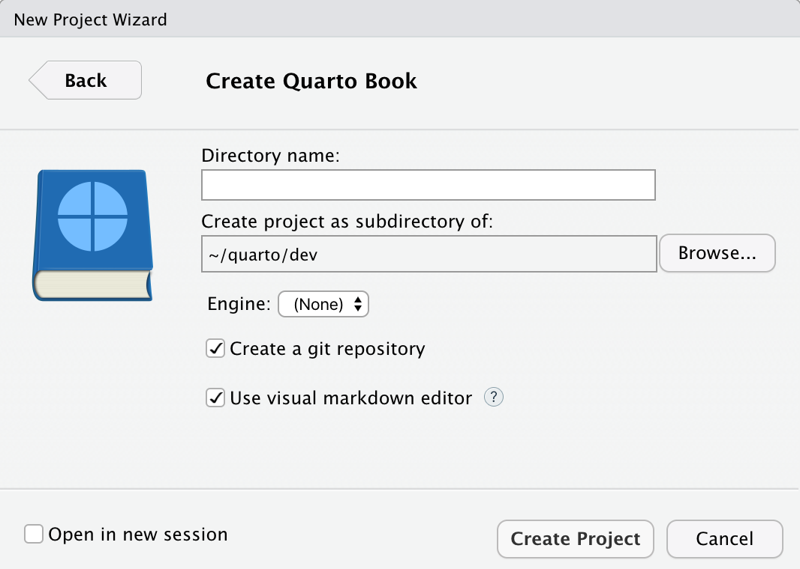

Creating a Book
Quarto can help you create a book that combines multiple documents into a single manuscript in a variety of formats.
Overview
Quarto Books are combinations of multiple documents (chapters) into a single manuscript. Books can be created in a variety of formats:
- HTML
- MS Word
- EPUB
HTML books are actually just a special type of Quarto Website and consequently support all of the same features as websites including full-text search. The most important difference is that HTML books use chapter numbers and therefore support Cross References between different chapters.
Here are some examples of books created with Quarto:
| Book | Source |
|---|---|
| Hands on Programming with R | Code |
| Visualization Curriculum | Code |
Getting Started
To create a new book project, use the Quarto create-project command:
quarto create-project mybook --type bookThis will create the scaffolding for a simple book in the mybook sub-directory. To build and view the HTML version of the book use the preview command:
cd mybook
quarto previewThis will build the HTML version of the book and run a local web server to view it. Here’s what you’ll see in your browser for the simple book scaffolding:

The book’s chapters are contained in the files index.qmd, intro.qmd, summary.qmd. Try adding some content to one of these files and saving—you’ll notice that the book preview is automatically updated in the browser.
You’ll also notice that a Quarto project file (_quarto.yml) was created in the mybook directory. This file contains the initial configuration for your book:
project:
type: book
book:
title: "mybook"
author: "Jane Doe"
date: "8/18/2021"
chapters:
- index.qmd
- intro.qmd
- summary.qmd
- references.qmd
bibliography: references.bib
format:
html:
theme: cosmo
pdf:
documentclass: scrreport
epub:
cover-image: cover.pngSee the Project Basics article to learn more about working with projects, including how to add custom pre and post render scripts to your book.
RStudio
If you are using RStudio you can also create a Quarto book via the New Project command:

Render chapters within the book using the Render command, render the entire book using the Render Book command on the Build tab.
Workflow
Development
When working on a book, you’ll typically run the local development server as described above and incrementally preview content as you work:
quarto previewIf you are authoring within RStudio, you can run the development server within the RStudio Viewer pane using the Serve Book command on the Build Tab.
The development server will automatically re-render input files whenever they change.
Changes to configuration files (e.g. _quarto.yml) as well as site resources (e.g. theme or CSS files) will also cause an automatic refresh.
Note that development server updates do not cause an update to the final book output. Consequently, you should always quarto render your site before deploying it as described below in Publishing.
Publishing
When you are ready to publish the book, use the render command to render all output formats:
quarto render --to allIf you pass no arguments to quarto render the default format (HTML) will be rendered. You can also render individual formats via the --to argument:
quarto render # render default format (HTML)
quarto render --to pdf # render PDF format onlyThe output of your book will be written to the _book sub-directory of your book project:
mybook/
_book/
index.html # and other book files
mybook.pdf
mybook.epubSee the documentation on Publishing Websites for details on how to publish books to GitHub Pages, Netlify, and other services. Note that in that documentation the output-dir may be referred to as _site: for publishing books you should use _book rather than _site.
Learning More
Once you’ve got the basic book template up and running check out these articles for various ways to enhance your book:
Book Structure delves into different ways to structure a book (numbered and unnumbered chapters/sections, creating multiple parts, adding appendices, etc.)
Book Crossrefs explains how to create cross references to sections, figures, tables, equations and more within books.
Book Output covers customizing the style and appearance of your book in the various output format as well as how to provide navigation and other tools for readers.
Book Options provides a comprehensive reference to all of the available book options.
Code Execution provides tips for optimizing the rendering of books with large numbers of documents or expensive computations.
Publishing Websites enumerates the various options for publishing your book as a website including GitHub Pages, Netlify, Google Firebase, and RStudio Connect.